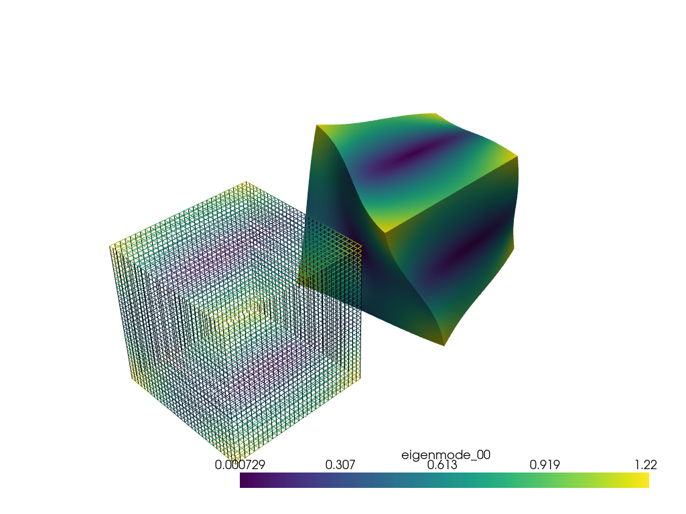
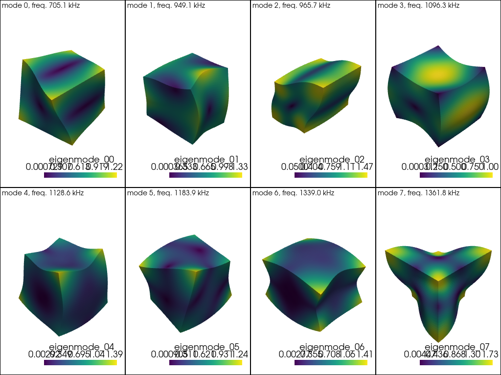

注釈
ここ をクリックすると完全なサンプルコードをダウンロードできます．
warp_by_vector を用いた振動固有モードの表示#
この例は，Visscher, William M., Albert Migliori, Thomas M.Bell, et Robert A.Reinertで概説されているように，固有モードがRitz法を使用して計算された立方体に warp_by_vector フィルタを適用します. "On the normal modes of free vibration of inhomogeneous and anisotropic elastic objects". The Journal of the Acoustical Society of America 90, n.4 (october 1991): 2154-62. https://asa.scitation.org/doi/10.1121/1.401643
まず，振動する立方体の固有値問題を解く．高速計算を得るために(低い最大多項式次数を選択した)粗近似を用いました．
import numpy as np
from scipy.linalg import eigh
import pyvista as pv
def analytical_integral_rppd(p, q, r, a, b, c):
"""Returns the analytical value of the RPPD integral, i.e. the integral
of x**p * y**q * z**r for (x, -a, a), (y, -b, b), (z, -c, c)."""
if p < 0:
return 0.0
elif q < 0:
return 0.0
elif r < 0.0:
return 0.0
else:
return (
a ** (p + 1)
* b ** (q + 1)
* c ** (r + 1)
* ((-1) ** p + 1)
* ((-1) ** q + 1)
* ((-1) ** r + 1)
/ ((p + 1) * (q + 1) * (r + 1))
)
def make_cijkl_E_nu(E=200, nu=0.3):
"""Makes cijkl from E and nu.
Default values for steel are: E=200 GPa, nu=0.3."""
lambd = E * nu / (1 + nu) / (1 - 2 * nu)
mu = E / 2 / (1 + nu)
cij = np.zeros((6, 6))
cij[(0, 1, 2), (0, 1, 2)] = lambd + 2 * mu
cij[(0, 0, 1, 1, 2, 2), (1, 2, 0, 2, 0, 1)] = lambd
cij[(3, 4, 5), (3, 4, 5)] = mu
# check symmetry
assert np.allclose(cij, cij.T)
# convert to order 4 tensor
coord_mapping = {
(1, 1): 1,
(2, 2): 2,
(3, 3): 3,
(2, 3): 4,
(1, 3): 5,
(1, 2): 6,
(2, 1): 6,
(3, 1): 5,
(3, 2): 4,
}
cijkl = np.zeros((3, 3, 3, 3))
for i in range(3):
for j in range(3):
for k in range(3):
for l in range(3):
u = coord_mapping[(i + 1, j + 1)]
v = coord_mapping[(k + 1, l + 1)]
cijkl[i, j, k, l] = cij[u - 1, v - 1]
return cijkl, cij
def get_first_N_above_thresh(N, freqs, thresh, decimals=3):
"""Returns first N unique frequencies with amplitude above threshold based
on first decimals."""
unique_freqs, unique_indices = np.unique(np.round(freqs, decimals=decimals), return_index=True)
nonzero = unique_freqs > thresh
unique_freqs, unique_indices = unique_freqs[nonzero], unique_indices[nonzero]
return unique_freqs[:N], unique_indices[:N]
def assemble_mass_and_stiffness(N, F, geom_params, cijkl):
"""This routine assembles the mass and stiffness matrix.
It first builds an index of basis functions as a quadruplet of
component and polynomial order for (x^p, y^q, z^r) of maximum order N.
This routine only builds the symmetric part of the matrix to speed
things up.
"""
# building coordinates
triplets = []
for p in range(N + 1):
for q in range(N - p + 1):
for r in range(N - p - q + 1):
triplets.append((p, q, r))
assert len(triplets) == (N + 1) * (N + 2) * (N + 3) // 6
quadruplets = []
for i in range(3):
for triplet in triplets:
quadruplets.append((i, *triplet))
assert len(quadruplets) == 3 * (N + 1) * (N + 2) * (N + 3) // 6
# assembling the mass and stiffness matrix in a single loop
R = len(triplets)
E = np.zeros((3 * R, 3 * R)) # the mass matrix
G = np.zeros((3 * R, 3 * R)) # the stiffness matrix
for index1, quad1 in enumerate(quadruplets):
I, p1, q1, r1 = quad1
for index2, quad2 in enumerate(quadruplets[index1:]):
index2 = index2 + index1
J, p2, q2, r2 = quad2
G[index1, index2] = (
cijkl[I, 1 - 1, J, 1 - 1]
* p1
* p2
* F(p1 + p2 - 2, q1 + q2, r1 + r2, **geom_params)
+ cijkl[I, 1 - 1, J, 2 - 1]
* p1
* q2
* F(p1 + p2 - 1, q1 + q2 - 1, r1 + r2, **geom_params)
+ cijkl[I, 1 - 1, J, 3 - 1]
* p1
* r2
* F(p1 + p2 - 1, q1 + q2, r1 + r2 - 1, **geom_params)
+ cijkl[I, 2 - 1, J, 1 - 1]
* q1
* p2
* F(p1 + p2 - 1, q1 + q2 - 1, r1 + r2, **geom_params)
+ cijkl[I, 2 - 1, J, 2 - 1]
* q1
* q2
* F(p1 + p2, q1 + q2 - 2, r1 + r2, **geom_params)
+ cijkl[I, 2 - 1, J, 3 - 1]
* q1
* r2
* F(p1 + p2, q1 + q2 - 1, r1 + r2 - 1, **geom_params)
+ cijkl[I, 3 - 1, J, 1 - 1]
* r1
* p2
* F(p1 + p2 - 1, q1 + q2, r1 + r2 - 1, **geom_params)
+ cijkl[I, 3 - 1, J, 2 - 1]
* r1
* q2
* F(p1 + p2, q1 + q2 - 1, r1 + r2 - 1, **geom_params)
+ cijkl[I, 3 - 1, J, 3 - 1]
* r1
* r2
* F(p1 + p2, q1 + q2, r1 + r2 - 2, **geom_params)
)
G[index2, index1] = G[index1, index2] # since stiffness matrix is symmetric
if I == J:
E[index1, index2] = F(p1 + p2, q1 + q2, r1 + r2, **geom_params)
E[index2, index1] = E[index1, index2] # since mass matrix is symmetric
return E, G, quadruplets
N = 8 # maximum order of x^p y^q z^r polynomials
rho = 8.0 # g/cm^3
l1, l2, l3 = 0.2, 0.2, 0.2 # all in cm
geometry_parameters = {'a': l1 / 2.0, 'b': l2 / 2.0, 'c': l3 / 2.0}
cijkl, cij = make_cijkl_E_nu(200, 0.3) # Gpa, without unit
E, G, quadruplets = assemble_mass_and_stiffness(
N, analytical_integral_rppd, geometry_parameters, cijkl
)
# solving the eigenvalue problem using symmetric solver
w, vr = eigh(a=G, b=E)
omegas = np.sqrt(np.abs(w) / rho) * 1e5 # convert back to Hz
freqs = omegas / (2 * np.pi)
# expected values from (Bernard 2014, p.14),
# error depends on polynomial order ``N``
expected_freqs_kHz = np.array([704.8, 949.0, 965.2, 1096.3, 1128.4, 1182.8, 1338.9, 1360.9])
computed_freqs_kHz, mode_indices = get_first_N_above_thresh(8, freqs / 1e3, thresh=1, decimals=1)
print('found the following first unique eigenfrequencies:')
for ind, (freq1, freq2) in enumerate(zip(computed_freqs_kHz, expected_freqs_kHz)):
error = np.abs(freq2 - freq1) / freq1 * 100.0
print(f"freq. {ind + 1:1}: {freq1:8.1f} kHz, expected: {freq2:8.1f} kHz, error: {error:.2f} %")
出力:
found the following first unique eigenfrequencies:
freq. 1: 705.1 kHz, expected: 704.8 kHz, error: 0.04 %
freq. 2: 949.1 kHz, expected: 949.0 kHz, error: 0.01 %
freq. 3: 965.7 kHz, expected: 965.2 kHz, error: 0.05 %
freq. 4: 1096.3 kHz, expected: 1096.3 kHz, error: 0.00 %
freq. 5: 1128.6 kHz, expected: 1128.4 kHz, error: 0.02 %
freq. 6: 1183.9 kHz, expected: 1182.8 kHz, error: 0.09 %
freq. 7: 1339.0 kHz, expected: 1338.9 kHz, error: 0.01 %
freq. 8: 1361.8 kHz, expected: 1360.9 kHz, error: 0.07 %
次に，立方体のメッシュにモードを表示します．
# Create the 3D NumPy array of spatially referenced data
# (nx by ny by nz)
nx, ny, nz = 30, 31, 32
x = np.linspace(-l1 / 2.0, l1 / 2.0, nx)
y = np.linspace(-l2 / 2.0, l2 / 2.0, ny)
x, y = np.meshgrid(x, y)
z = np.zeros_like(x) + l3 / 2.0
grid = pv.StructuredGrid(x, y, z)
slices = []
for zz in np.linspace(-l3 / 2.0, l3 / 2.0, nz)[::-1]:
slice = grid.points.copy()
slice[:, -1] = zz
slices.append(slice)
vol = pv.StructuredGrid()
vol.points = np.vstack(slices)
vol.dimensions = [*grid.dimensions[0:2], nz]
for i, mode_index in enumerate(mode_indices):
eigenvector = vr[:, mode_index]
displacement_points = np.zeros_like(vol.points)
for weight, (component, p, q, r) in zip(eigenvector, quadruplets):
displacement_points[:, component] += (
weight * vol.points[:, 0] ** p * vol.points[:, 1] ** q * vol.points[:, 2] ** r
)
if displacement_points.max() > 0.0:
displacement_points /= displacement_points.max()
vol[f'eigenmode_{i:02}'] = displacement_points
warpby = 'eigenmode_00'
warped = vol.warp_by_vector(warpby, factor=0.04)
warped.translate([-1.5 * l1, 0.0, 0.0], inplace=True)
p = pv.Plotter()
p.add_mesh(vol, style='wireframe', scalars=warpby)
p.add_mesh(warped, scalars=warpby)
p.show()

最後に，最初の8つの固有モードのギャラリーを作成します．
p = pv.Plotter(shape=(2, 4))
for i in range(2):
for j in range(4):
p.subplot(i, j)
current_index = 4 * i + j
vector = f"eigenmode_{current_index:02}"
p.add_text(
f"mode {current_index}, freq. {computed_freqs_kHz[current_index]:.1f} kHz",
font_size=10,
)
p.add_mesh(vol.warp_by_vector(vector, factor=0.03), scalars=vector)
p.show()

Total running time of the script: ( 0 minutes 10.378 seconds)